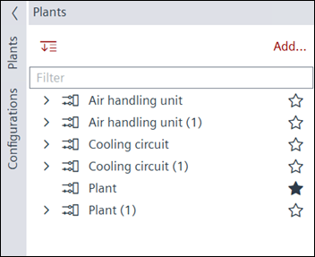
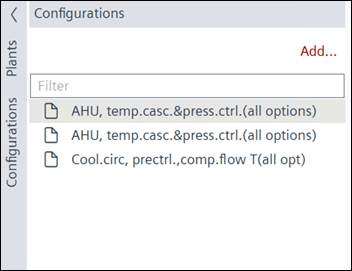

Applications
A plant in the building structure consists of pre-defined plants which are added from the library or generated from configuration files. There are predefined plants in the library for the most common applications, e.g., air handling, heat generation, domestic hot water (DHW), or heating circuit. You can add an empty plant or one from a defined configuration.
For more information, see Working with plants.
Configuration file
A plant configurator configures a plant in the form of a configuration file. The configuration file can be predefined or added, based on an existing plant from the library.
For more information, see Working with application configurator.
1 | Task selector | 2 | Plants navigation view |
3 | Toolbar | 4 | Engineering notes |
5 | Properties |
| |
① Task selector
Task | Description |
|---|---|
Applications | |
I/O configuration | |
Modbus | |
M-bus | |
KNX PL-Link | |
BACnet references | |
BACnet objects | |
Programming | |
Device assignment |
② Plants navigation view
Plants tab
The Plants navigation view shows the hierarchy of devices in the plant.

Command | Description |
|---|---|
| Expands/collapses the folder structure. |
|
Add | Opens the Add plants dialog box to create a new plant. |
| Plant focus is set for automatic drop destination. |
Plant focus is not set for automatic drop destination. Objects can be assigned to the plant or lower level by using drag & drop at any time | |
Filter | Sorts and displays results as per field entry. |

Plants tab - context menu
Select and right-click the plant to display the context menu commands.
Command | Description |
|---|---|
Add folder | Opens the Add folder window for creating a new folder. |
Delete | Deletes the selected element. |
Duplicate | Creates a copy of the plant. |
Rename | Opens the Rename window for entering a different name for the selected element. |
Show in program | Opens the selected element in the Programming editor. |
Open properties | Opens the Properties of the selected element. |
Configurations tab

Command | Description |
|---|---|
|
Add | Opens the Add configuration window to import or create a new configuration file. |
Filter | Displays results as per field entry. |
Configurations tab - context menu
Command | Description |
|---|---|
Configure | Opens the Application configurator dialog box to configure the plant. |
Generate | Creates a plant, based on the selected configuration file. |
Delete | Deletes the plant configuration. |
Duplicate | Creates a copy of the plant configuration. |
Rename | Re-labels the plant configuration. |
Save as | Exports the plant configuration as .s1pltcfg file. |
③ Toolbar
Command | Description |
|---|---|
|
State | Indicates the state of the application. The green color indicates that the application is online and running or paused.
|
Check | Checks for duplicate names, number of I/Os, trend limits, etc. The check is automatically performed before loading a device. |
(Play) | Only visible when the device is online. Activates an online session and loads changes for the selected device. |
(Pause) | Only visible when the device is online and an online, session is started. Deactivates an active online session. |
(Alarming) | Temporarily suppresses all alarms for testing purposes. Note: If several alarms are triggered due to a field device status is “Device-Missing” (perform an alarm shower), only the “Device-Missing” alarm is sent to the corresponding recipients. This ensures that the user does not receive and have to acknowledge multiple alarms. |
④ Engineering notes
Element | Description |
|---|---|
Engineering notes | Displays the working area for adding notes. The title of the working area shows the device type. The engineering notes are for all the plants listed under that device (and not for a single plant). |
⑤ Properties
The Properties view shows the properties of the selected plants or folders. You can toggle the Properties area on the right.
The items displayed in the Properties view depend on the selected plant or folder type.